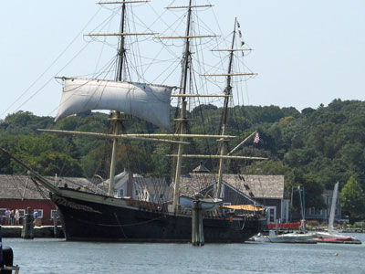
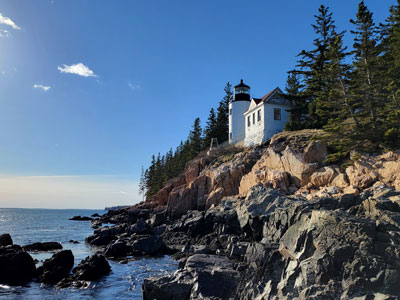
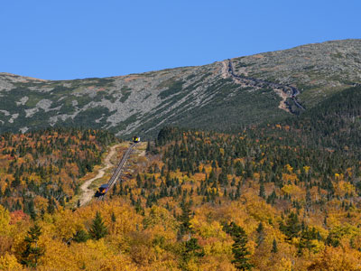
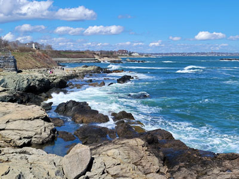
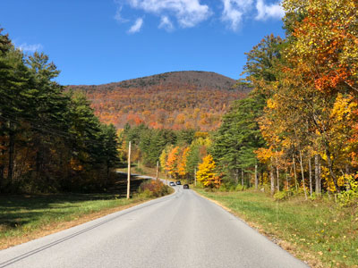
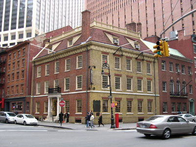
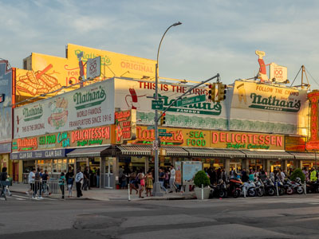
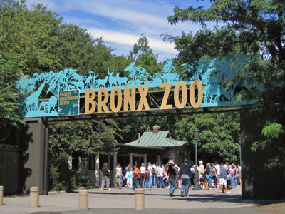
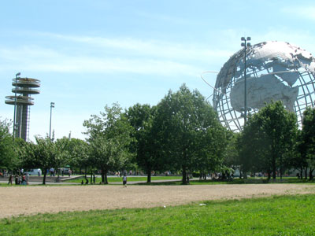

Explore each state by clicking on the map. Each state has its own unique culture, cuisine, and attractions to discover. Whether you're looking for outdoor adventures, historical landmarks, or vibrant cities, there's something for everyone in the United States. Start planning your next trip today and experience all that this diverse country has to offer!
Top Locations


PortableNYCTours, CC BY-SA 4.0, via Wikimedia Commons; Image Size Adjusted
.jpg){kind=link}
Connecticut
Charming New England coastal towns, historic Mystic Seaport, and Yale's ivy halls await in Connecticut, a short trip from bustling New York City.

Anthony Quintano from Hillsborough, NJ, United States, CC BY 2.0, via Wikimedia Commons; Image Size Adjusted
.jpg){kind=link}
Maine
Savor fresh lobster, hike Acadia National Park's rocky coast, and explore charming lighthouse towns along Maine's picturesque, forested shoreline.

bryan..., CC BY-SA 2.0, via Wikimedia Commons; Image Size Adjusted
.jpg){kind=link}
Massachusetts
Walk Boston's Freedom Trail, explore Cape Cod's beaches, and dive into Massachusetts' rich colonial history and vibrant college-town culture.

Rhododendrites, CC BY-SA 4.0, via Wikimedia Commons; Image Size Adjusted
.jpg){kind=link}
New Hampshire
Hike the White Mountains, drive scenic byways past granite quarries, and explore New Hampshire's charming lake towns and covered bridges.

TomasEE, CC BY 3.0, via Wikimedia Commons; Image Size Adjusted
.jpg){kind=link}
Rhode Island
Tour Newport's Gilded Age mansions, sail Narragansett Bay, and explore charming coastal towns across America's smallest seaside state.

Jdforrester, CC BY 4.0, via Wikimedia Commons; Image Size Adjusted

Vermont
Drive scenic byways past covered bridges, sample fresh maple syrup, and ski Vermont's Green Mountains amid charming New England small-town charm.

Ajay Suresh from New York, NY, USA, CC BY 2.0, via Wikimedia Commons; Image Size Adjusted
.jpg){kind=link}
Delaware
Relax on Delaware's sandy beaches, explore historic Wilmington, and enjoy tax-free shopping in America's charming, easy-to-explore First State.
-400.jpg)
ajay_suresh, CC BY 2.0, via Wikimedia Commons; Image Size Adjusted
.jpg){kind=link}
Maryland
Feast on Chesapeake Bay crabs, explore historic Baltimore and Annapolis, and enjoy scenic sailing along Maryland's 4,000 miles of tidal shoreline.

Misterweiss at English Wikipedia, Public domain, via Wikimedia Commons; Image Size Adjusted

New Jersey
Stroll the Jersey Shore's boardwalks, explore Atlantic City's casinos, and discover charming towns near bustling Newark and New York City.

Hypnotoad78, CC BY-SA 4.0, via Wikimedia Commons; Image Size Adjusted

New York
Experience New York City's iconic skyline and Broadway, then explore Niagara Falls, the Adirondacks, and charming Hudson Valley wine country.

Pennsylvania
Walk historic Philadelphia's Independence Hall, tour Gettysburg's battlefields, and explore Pittsburgh's riverfront and Amish countryside.
_(51395759113)-400.jpg)
ajay_suresh, CC BY 2.0, via Wikimedia Commons; Image Size Adjusted
_(51395759113).jpg){kind=link}
Washington DC
Tour iconic monuments, world-class free museums, and the halls of power in Washington, D.C., America's vibrant, history-rich capital city.

MusikAnimal, CC BY-SA 4.0, via Wikimedia Commons; Image Size Adjusted

Florida
Sun-soaked beaches, Walt Disney World, and vibrant Miami nightlife await in Florida, plus the Everglades' wild beauty and laid-back Florida Keys.

Georgia
Stroll Savannah's oak-lined squares, explore Atlanta's civil rights history, and hike the Blue Ridge Mountains amid Georgia's Southern hospitality.

Sam valadi, CC BY 2.0, via Wikimedia Commons; Image Size Adjusted

North Carolina
Hike the Blue Ridge Mountains, relax on the Outer Banks' beaches, and explore vibrant Charlotte and Raleigh's Research Triangle culture.

PortableNYCTours, CC BY-SA 4.0, via Wikimedia Commons; Image Size Adjusted
.jpg){kind=link}
South Carolina
Stroll historic Charleston's cobblestone streets, relax on Myrtle Beach's shores, and hike the Blue Ridge Mountains' scenic Upstate trails.

Virginia
Explore historic Williamsburg and Richmond, hike the Blue Ridge Mountains, and relax on Virginia Beach's shores along the scenic Chesapeake Bay.

Jeff P from Berkeley, CA, USA, CC BY 2.0, via Wikimedia Commons; Image Size Adjusted
.jpg){kind=link}
West Virginia
Whitewater raft the New River Gorge, hike the Appalachian Mountains, and explore small towns amid West Virginia's rugged, scenic hills.

Alabama
Discover Alabama's civil rights landmarks, Gulf Coast beaches, and charming small towns, from vibrant Birmingham to historic Mobile and scenic Cheaha State Park.
Arkansas
Soak in natural hot springs, hike the Ozark Mountains, and explore charming towns amid the Arkansas Delta's rivers, lakes, and lush forested trails.
Kentucky
Sip bourbon along Kentucky's famous trail, watch thoroughbreds run in Louisville, and explore rolling Bluegrass pastures and Appalachian foothills.
Louisiana
Feast on Cajun cuisine, hear jazz in New Orleans' French Quarter, and explore Louisiana's bayous, swamps, and vibrant Mardi Gras culture.
Mississippi
Trace the blues' birthplace along Mississippi's Delta, explore historic Natchez mansions, and relax on Gulf Coast beaches near vibrant Jackson.
Oklahoma
Explore Native American heritage sites, roam the Great Plains, and discover Oklahoma City's museums amid rolling prairies and eastern forests.

Jim.henderson, Public domain, via Wikimedia Commons; Image Size Adjusted

Tennessee
Hear country music echo through Nashville, blues in Memphis, and hike the misty Great Smoky Mountains amid Tennessee's rich musical heritage.

Momos, CC BY-SA 3.0, via Wikimedia Commons; Image Size Adjusted

Texas
Explore vibrant Austin, historic San Antonio's Alamo, and Houston's space history, plus Texas' vast plains, canyons, and Gulf Coast beaches.

Illinois
Explore Chicago's skyline, deep-dish pizza, and Millennium Park, then venture into Illinois' charming small towns and peaceful Shawnee National Forest.
Indiana
Watch the Indy 500, stroll the Indiana Dunes' Lake Michigan shores, and explore Indianapolis' arts scene amid the Hoosier State's rolling hills.

MusikAnimal, CC BY-SA 4.0, via Wikimedia Commons; Image Size Adjusted
.jpg){kind=link}
Michigan
Explore Michigan's Great Lakes shorelines, charming Mackinac Island, and vibrant Detroit, plus the Upper Peninsula's forests, falls, and beaches.
Minnesota
Discover the Land of 10,000 Lakes: canoe the Boundary Waters, explore the Twin Cities' culture, and hike Minnesota's peaceful North Woods.

Ajay Suresh from New York, NY, USA, CC BY 2.0, via Wikimedia Commons; Image Size Adjusted
.jpg){kind=link}
Ohio
Explore Cleveland's Rock and Roll Hall of Fame, hike Hocking Hills and Cuyahoga Valley, and tour Cincinnati's museums amid Ohio's Great Lakes charm.

The All-Nite Images from NY, NY, USA, CC BY-SA 2.0, via Wikimedia Commons; Image Size Adjusted
.jpg){kind=link}
Wisconsin
Sample cheese and craft beer in America's Dairyland, explore Milwaukee's lakefront, and relax along Wisconsin's Lake Michigan shoreline.

Postdlf, CC BY-SA 3.0, via Wikimedia Commons; Image Size Adjusted

Iowa
Wander rolling farmland and charming small towns in Iowa, the safe, friendly heart of the Corn Belt, with covered bridges and the Field of Dreams.
Joyofmuseums, CC BY-SA 4.0, via Wikimedia Commons; Image Size Adjusted

Kansas
Roam the Flint Hills' tallgrass prairie, explore Wichita's museums, and follow historic cattle trails across Kansas' wide-open Great Plains scenery.
Joyofmuseums, CC BY-SA 4.0, via Wikimedia Commons; Image Size Adjusted
Missouri
Explore St. Louis' Gateway Arch, Kansas City's barbecue and jazz, and hike the scenic Ozark Mountains along Missouri's winding namesake river.
Joyofmuseums, CC BY-SA 4.0, via Wikimedia Commons; Image Size Adjusted
Nebraska
Explore Omaha's zoo and riverfront, then roam Nebraska's rolling Sandhills and treeless Great Plains prairie along the historic Oregon Trail.
Joyofmuseums, CC BY-SA 4.0, via Wikimedia Commons; Image Size Adjusted
North Dakota
Roam Theodore Roosevelt National Park's badlands, explore Fargo's charm, and discover North Dakota's vast prairies and frontier history.
Joyofmuseums, CC BY-SA 4.0, via Wikimedia Commons; Image Size Adjusted
South Dakota
Marvel at Mount Rushmore and the Badlands' rugged spires, then explore the Black Hills and South Dakota's rich Great Plains heritage.

Eden, Janine and Jim, CC BY 2.0, via Wikimedia Commons; Image Size Adjusted

Arizona
Marvel at the Grand Canyon, red rock formations in Sedona, and Sonoran Desert landscapes, then explore vibrant Phoenix and historic Route 66 towns.
Eden, Janine and Jim, CC BY 2.0, via Wikimedia Commons; Image Size Adjusted
California
From Hollywood glamour to Yosemite's granite cliffs, wine country, and golden beaches, California offers endless adventure, culture, and iconic scenery.
Eden, Janine and Jim, CC BY 2.0, via Wikimedia Commons; Image Size Adjusted
Colorado
Ski world-class Rocky Mountain slopes, hike scenic trails, and soak in hot springs, then explore Denver's breweries and charming mountain towns.
Eden, Janine and Jim, CC BY 2.0, via Wikimedia Commons; Image Size Adjusted
Hawaii
Relax on golden beaches, hike volcanic craters, and snorkel vibrant reefs across Hawaii's tropical islands, rich in Polynesian culture and aloha spirit.
Eden, Janine and Jim, CC BY 2.0, via Wikimedia Commons; Image Size Adjusted
Nevada
Experience Las Vegas' dazzling lights and casinos, then explore Nevada's stark desert beauty, the Sierra Nevada, and Lake Tahoe's clear waters.
Eden, Janine and Jim, CC BY 2.0, via Wikimedia Commons; Image Size Adjusted
New Mexico
Explore Santa Fe's adobe art galleries, hike Rio Grande canyons, and discover ancient pueblos amid New Mexico's dramatic desert scenery.
Eden, Janine and Jim, CC BY 2.0, via Wikimedia Commons; Image Size Adjusted
Utah
Explore five stunning national parks, ski world-class powder near Salt Lake City, and hike Utah's red rock canyons and towering desert arches.
Eden, Janine and Jim, CC BY 2.0, via Wikimedia Commons; Image Size Adjusted
Alaska
America's last frontier: glaciers, grizzly bears, and midnight sun. Explore vast wilderness, Denali's peaks, and charming coastal towns by land, sea, or air.
Eden, Janine and Jim, CC BY 2.0, via Wikimedia Commons; Image Size Adjusted
Idaho
Raft the Salmon River, soak in hot springs, and ski Sun Valley's slopes, then discover Idaho's rugged mountains, gem mines, and outdoor adventures.
Eden, Janine and Jim, CC BY 2.0, via Wikimedia Commons; Image Size Adjusted
Montana
Explore Glacier and Yellowstone's wild edges, hike Big Sky's mountain ranges, and roam Montana's vast prairies and badlands under endless skies.
Eden, Janine and Jim, CC BY 2.0, via Wikimedia Commons; Image Size Adjusted
Oregon
Drive the dramatic Pacific coastline, hike volcanic peaks, and explore Portland's food scene amid Oregon's forests, waterfalls, and high deserts.
Eden, Janine and Jim, CC BY 2.0, via Wikimedia Commons; Image Size Adjusted
Washington
Explore Seattle's Space Needle and coffee culture, hike Mount Rainier's glaciers, and kayak Puget Sound amid Washington's lush rainforests.
Eden, Janine and Jim, CC BY 2.0, via Wikimedia Commons; Image Size Adjusted
Wyoming
Explore Yellowstone's geysers and Grand Teton's peaks, then roam Wyoming's vast, wide-open prairies and badlands under big open skies.